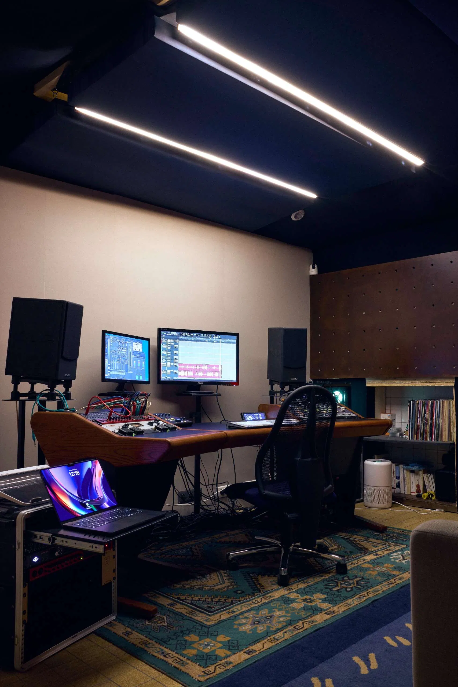

Du beat au clip, tout est produit ici — au 182 boulevard de la Villette, Paris 19ᵉ.
182 boulevard
de la Villette
Niveau −1
Bâtiment Gens Jaurès
Jaurès
Lignes 2 · 5 · 7bis
L'espace est né d'une idée simple : transformer une ancienne cuisine en un véritable laboratoire de création sensorielle. Aujourd'hui, ce lieu est devenu un studio immersif et multidisciplinaire, où le son, l'image et les ambiances se rencontrent pour donner vie à des projets artistiques uniques.
Plus qu'un simple studio, c'est une expérience.
Un lieu où l'on explore, où l'on crée, où chaque projet est pensé comme une recette : on y infuse les idées, on mijote les concepts, on affine les détails pour révéler toute la richesse des créations.
Que vous soyez artiste, marque, créateur ou simplement curieux, notre studio vous accueille pour imaginer ensemble des contenus sonores, visuels ou immersifs sur mesure.
Cinq services, une seule équipe. Pas de sous-traitance, pas d'aller-retour entre studios.
Créneaux ouverts en semaine et le week-end. Tarif et disponibilités en direct sur le système de réservation.